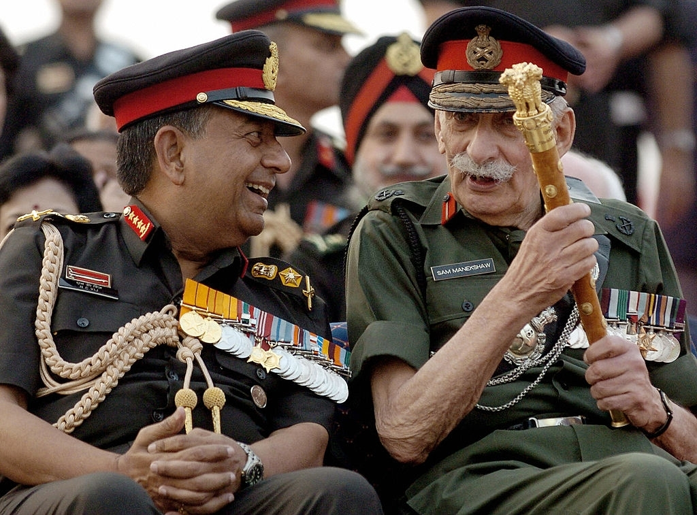

Field Marshal Sam Hormusji Framji Jamshedji Manekshaw
"A Soldier's General"

"India's first five-star General".
"A Soldier's General"
"India's first five-star General".
Here's a time line of Sam Manekshaw's life:
Listen to Army Chief Sam Manekshaw's radio message to the Pakistan Army on 15 Decemeber 1971
"The Indian Army is in Bangladesh, your Air Force has been destroyed, you are surrounded on
all sides, & if you don't surrender you'll be killed unmercifully."
~ Army
Chief Sam Manekshaw to Pakistan Army.
You should read more about this incredible human being on his Wikipedia entry. 💗